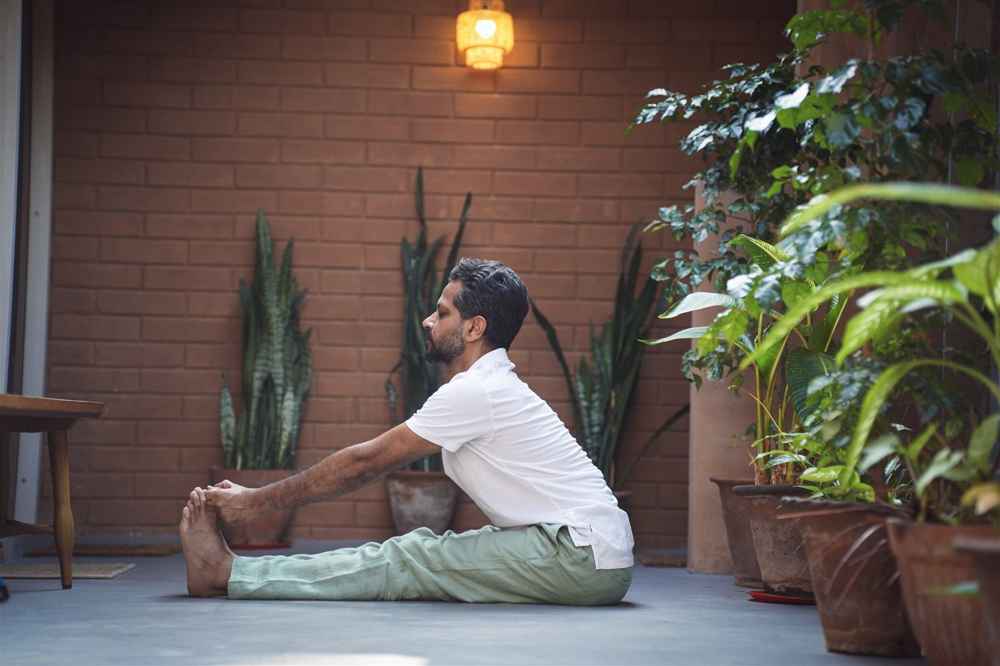

45 minutes · Beginner-friendly
Morning Yoga
Wake up the body, build strength gradually and begin your day with a clearer sense of attention.
Live, attentive, connected
Small live classes with clear instruction, observation and a rhythm you can sustain from home.

Live online / Schedule
Choose morning movement, a longer evening practice, or the study of breath. All times are India Standard Time.
45 minutes · Beginner-friendly
Wake up the body, build strength gradually and begin your day with a clearer sense of attention.
Movement · Strength · Mobility
A balanced evening practice of movement, strength, mobility and breath.
Classical pranayama
A progressive morning study of classical pranayama and attention.
02 / The experience
Online practice is guided with observation and individual attention. Classes are taught live, with careful verbal instruction and corrections that respond to the people present.
The morning yoga class moves from joint activation and mobility into accessible Hatha postures that develop strength and steadiness. Clear options help beginners and returning practitioners build a consistent practice before work or family commitments. You do not need to be flexible or have previous yoga experience to begin.
Evening yoga offers a longer practice of movement, strength, mobility and breath. Prana Urja is a separate monthly pranayama course, taught progressively.
You need a quiet space, a stable internet connection and a willingness to practise consistently. A mat and a few simple supports are helpful.


Morning yoga / How to join
For people starting yoga, returning after a break, or making room for practice in a busy day.
Prepare a mat, a quiet space and a stable internet connection. Position your camera so your full body is visible.
Register for morning yogaWho it is for